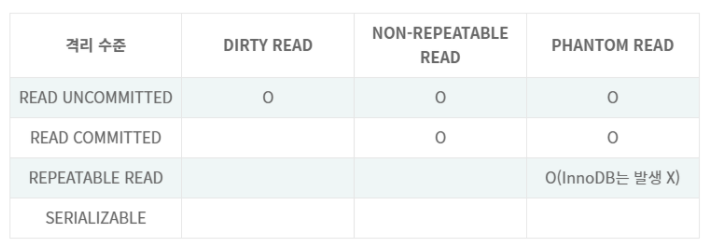
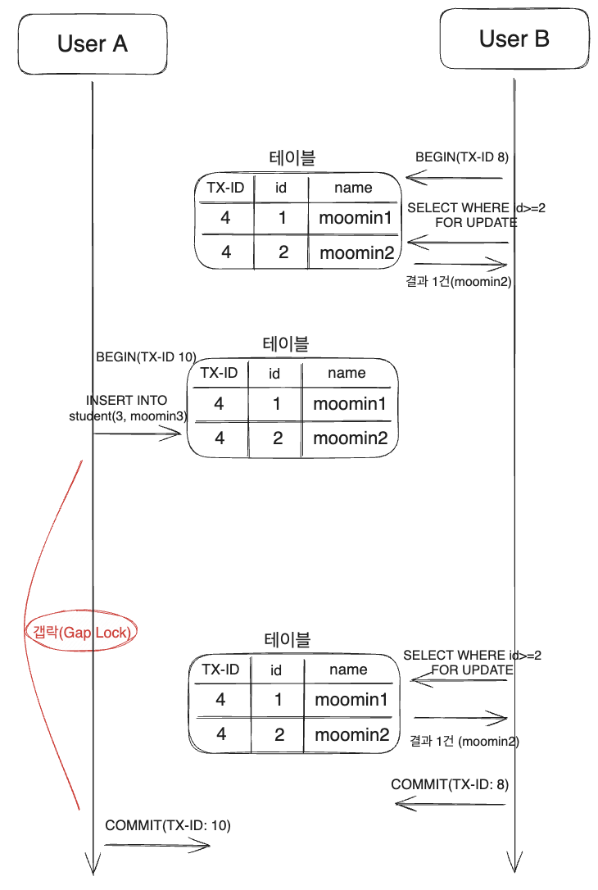

5.1 트랜잭션
5.1.1 MySQL 에서의 트랜잭션
- 트랜잭션을 사용하지 않는 MyISAM, MEMORY 스토리지 엔진은 쿼리 실행중 에러 발생시 partial update 현상이 발생
- 트랜잭션을 사용하면 partial update 현상을 처리하기 위한 수많은 조건문이 비즈니스 로직에서 삭제된다는 장점이 있다.
5.1.2 주의사항
- 로그인 상태를 확인하거나, dbms 작업 외 코드를 트랜잭션 내에 포함하면, 한정된 자원인 커넥션 개수를 낭비하게 된다.
- 이는 사용자가 커넥션 요청시 커넥션 할당을 기다려야하는 상황이 발생한다.
select의 경우 단순 조회 이기 때문에 트랜잭션에 포함할 필요는 없다.- 트랜잭션 업무 성격에 따라 트랜잭션을 분리할 수 있다.
5.2 MySQL 엔진의 잠금
- 스토리지 엔진 레벨 잠금 : 스토리지 엔진간 영향 없음
- MySQL 엔진 레벨 잠금 : 모든 스토리지 엔진에 영향을 줌
- 테이블락
- 메타 데이터락 : 테이블 구조를 잠금
- 네임드 락
5.2.1 글로벌 락
- MySQL 잠금 중 가장 범위가 크다. MySQL 서버 전체
- 한 세션에서 글로벌 락 획득시 다른 세션에서
select외 대부분의 쿼리는 사용 불가능 하다. - mysql dump 로 백업 시 사용하는데 성능에 문제가 존재한다.
- InnoDB 의 경우 트랜잭션을 사용해 모든 데이터 변경 작업을 멈출 필요가 없어 좀 더 가벼운 글로벌 락인 백업락을 도입했다.
5.2.2 테이블 락
- 테이블 단위로 설정되는 잠금
- 명시적, 묵시적 테이블 락이 존재한다.
- 묵시적 테이블 락은 MyISAM , MEMORY 테이블 에서 데이터를 변경하는 쿼리 실행시 발생한다.
- InnoDB 는 레코드 기반 잠금을 제공해 테이블 락을 사용하지 않는다.
( DDL 문의 경우 테이블락을 획득할 수 있다.)
5.2.3 네임드 락
GET_LOCK()함수를 이용해 임의의 string 에 대해 잠금 설정- 다른 세션이 명시적으로 해제나 타임아웃 될 때까지 해당 락을 획득할 수 없다.
5.2.4 메타데이터 락
- 데이터 베이스 객체 ( 테이블, 뷰 ) 의 이름이나 구조를 변경하는 경우 사용하는 잠금
- 묵시적 잠금 으로만 획득 가능
5.3 InnoDB 스토리지 엔진 잠금
5.3.1 InnoDB 스토리지 엔진의 잠금
- MySQL 에서 제공하는 잠금과 별개로 스토리지 엔진 내부에서 레코드 기반 잠금 방식 사용
- 다른 DBMS 와 차이점은 레코드 락 과 함께 갭 락을 제공한다는 점이다.
레코드 락
- InnoDB 는 레코드 자체가 아닌 인덱스의 레코드를 잠근다.
- 인덱스가 존재하지 않는 칼럼에 레코드 lock을 걸면, InnoDB는 자체적으로 클러스터 인덱스(PK)를 만들어 잠금을 설정한다. 따라서 모든 레코드가 해당 인덱스에 속한다고 간주하여 전체를 잠근다.
- pk, unique index 의 변경 작업은 갭 락은 사용하지 않고 레코드 락만 사용 한다.
갭락
- 레코드와 인접한 레코드 사이의 간격을 잠근다.
- 레코드와 레코드 사이 간격에 새로운 레코드 생성을 방지한다.
- 넥스트 키락의 일부로 사용된다.
- 조회 쿼리를 두 번 실행했을 때 다른 트랜잭션에서 수정이 발생하더라도 같은 결과가 리턴되도록 보장할 수 있다. 즉, Phantom Read를 방지하는 효과를 가진다.
넥스트 키 락
- 넥스크 키 락 = 레코드 락 + 갭 락 (레코드의 앞 뒤 갭 모두)
- 바이너리 로그가 기록되는 쿼리가 레플리카 서버에서 실행될 때, 기존 서버에서 만들어낸 결과와 동일한 결과를 만들어내도록 보장하는 것이 주 목적이다.
자동 증가 락
- 테이블마다 단 하나만 존재한다.
- 트랜잭션과 관계 없이
insert, replace문장에서auto_increment참조시에만 락이 걸렸다 즉시 해제된다. - 8.0 부터
inndob_autoinc_lock_mode =2를 사용해 경량화된 뮤텍스를 사용해 동시에 여러 커넥션이 insert 수행을 할 수 있다. auto_increment값은 쿼리가 실패했더라도 잠금을 최소화 하기 위해 값이 다시 줄어들지 않는다.
5.3.2 인덱스와 잠금
- InnoDB 레코드 락은 인덱스를 잠그는 방식으로 처리한다.
- 변경해야 할 레코드를 찾기 위해 검색한 모든 레코드의 인덱스의 락을 획득한다.
- 인덱스가 적절하게 설정되어 있지 않다면 테이블에 풀 스캔을 수행하면서 작업을 수행한다.
- 이는 다른 클라이언트가 해당 테이블에 접근하지 못하는 문제가 발생한다.
update member set age=10 where address = '서울' and age=20;
- address 칼럼에 index가 설정되어 있고 age 칼럼에 index 가 설정 되어 있지 않은 경우에 index가 존재하지 않는 age 칼럼을 처리하기 위해 member 테이블에서 address =‘서울’ 에 해당하는 모든 레코드의 index 들의 잠금을 얻는다.
- 만약 모든 칼럼에 index가 설정되어 있지 않다면 member 테이블을 풀 스캔 하며 update 쿼리를 진행한다. 테이블 레코드 전체에 락이 걸린다.
5.4 MySQL의 격리 수준
- 격리 수준은 트랜잭션이 동시에 처리될 때 특정 트랜잭션이 다른 트랜잭션에서 변경하거나 조회하는 데이터를 볼 수 있게 허용할지 여부를 결정하는 것

5.4.1 READ UNCOMMITTED
- 트랜잭션의 변경 사항이
commit, rollback여부에 관계 없이 다른 트랜잭션에서 확인할 수 있다. - Dirty read 발생한다.
- 트랜잭션 A 가
insert“data” 후 트랜잭션 B 가 삽입된select한 상황에서 트랜잭션 A 가rollback될경우 트랜잭션 B는 존재하지 않는 데이터 “data” 를 확인할 수 있다. - 데이터가 사라졌다 나타났다 하는 현상 발생해 사용이 불가능하다.
5.4.2 READ COMMITTED
- 오라클 DBMS 격리수준 기본 설정
- non repeatable read 발생해 데이터 정합성에 문제가 생긴다.
- 트랜잭션 A 가 변경한 사항은 undo log에 저장되게 되는데,
commit이전에 트랜잭션 B가 해당 레코드를 조회하면 undo log 영역의 데이터를 가져온다. - 이후 트랜잭션 A가
commit을 수행하고 트랜잭션 B 가 다시select문을 동일 레코드에 수행하면 첫번째select에서 얻었던 결과와 다른 결과를 가져오게 된다
트랜잭션 A 의commit시점이 트랜잭션 B 의 두번째select사이에 실행될때 문제가 발생한다.
5.4.3 REPEATABLE READ
- MySQL 격리수준 기본 설정
- InnoDB는 mvcc 를 위해 undo log에 백업해둔 이전 데이터를 이용해 동일 트랜잭션 내에서 동일한 결과를 보여줄 수 있게 한다.
- READ COMMITTED 또한 undo log의 이전 결과를 (mvcc 이용) 사용했다. 다만 차이점은 REPEATABLE READ는 이전 데이터의 여러 버전을 가운데 (undo log 기록 중)몇 번째 이전 버전까지 사용하느냐가 큰 차이점이다.
- undo log는 순차적으로 증가하는 트랜잭션의 번호 값을 함께 저장한다. 기본적으로 언두 영역은 InnoDB 스토리지 엔진의 판단 하에 주기적으로 삭제한다.
- REPEATABLE READ 설정의 경우 MVCC를 보장하기 위해 실행중인 트랜잭션 중 가장 오래된 트랜잭션 보다 숫자가 작은 트랜잭션 번호를 갖는 언두 영역 데이터는 삭제할 수 없다.
non-repeatable-read 문제를 해결하려면 트랜잭션보다 번호가 큰 undo log 영역의 데이터는 건너뛰고 트랜잭션보다 번호가 작은 데이터를 읽어 와야하기 때문이다. - 따라서, 한 트랜잭션이 장시간 종료되지 않으면 그 이전에 실행된 트랜잭션 번호의 백업들이 계속해 undo log에 남아있어 쿼리 시 조회해야하기 때문에 쿼리 성능이 저하된다.*
- 트랜잭션은 undo log 영역에서 자신의 트랜잭션 번호보다 작은 undo log 만 확인할 수 있다.
phantom read
- Phantom Read REPEATABLE READ에서 새로운 레코드의 삽입까지는 막지 않기 때문에 SELECT로 조회했을 때 다른 트랜잭션에 의해 추가된 데이터를 얻을 수 있는 상황을 말한다.
Select for update
- mvcc 를 사용하면 트랜잭션 보다 숫자가 큰 트랜잭션의 undo log는 읽지 않기 때문에 일반적으로 phantom read가 발생하지 않지만
select for update쿼리로 실행시 문제가 발생한다.select for update언두 레코드에는 잠금을 걸 수 없기 때문에 잠금을 하고 조회하는 레코드의 경우 언두 영역의 변경 전 데이터를 가져오는 것이 아니라 현재 레코드의 값을 가져오게 된다. 이로 인해 데이터의 부정합이 일어나 PHANTOM READ가 발생한다.
MySQL REPEATABLE READ 에서 phantom read
- innodb 스토리지 엔진은 갭락과 넥스트 키 락을 사용하기 때문에 발생하지 않는다.
- 넥스트 키 락을 사용해 레코드와 레코드 사이 간격에 갭 락이 걸리기 때문에 다른 트랙잭션이 결과 집합 사이에 새로운 레코드를 삽입할 수 없다.

5.4.4 SERIALIZABLE
- 동시 처리 능력이 가장 떨어진다.
select수행 시에도 잠금을 획득하여 실행한다.